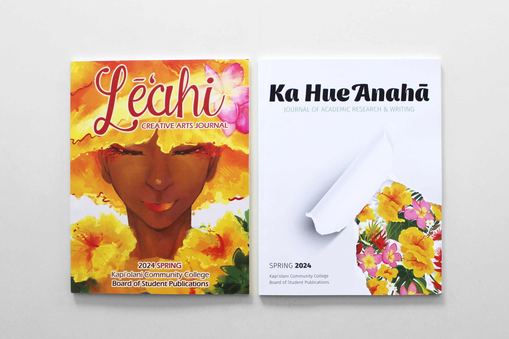
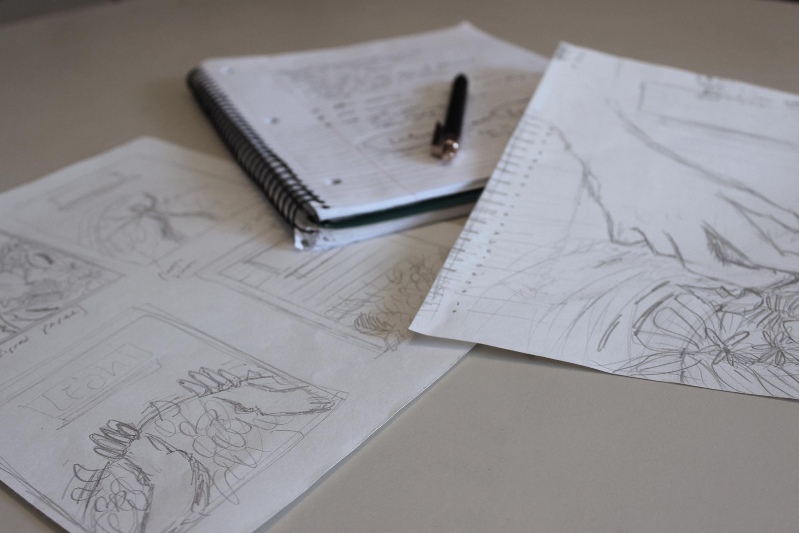
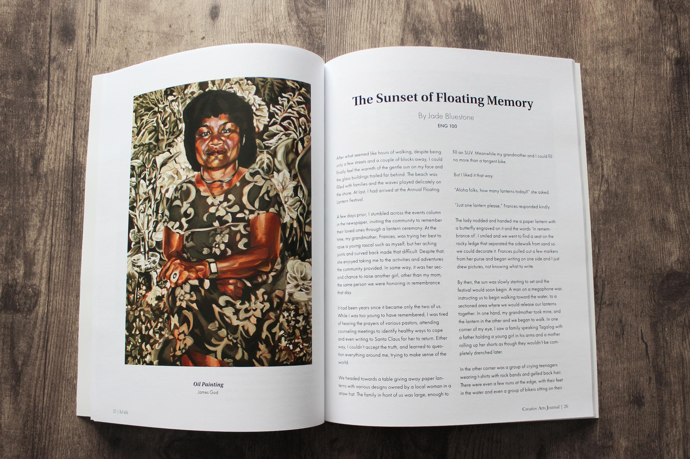
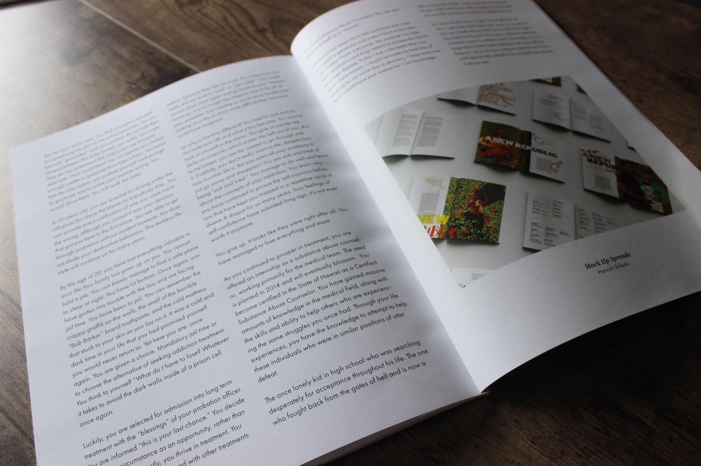
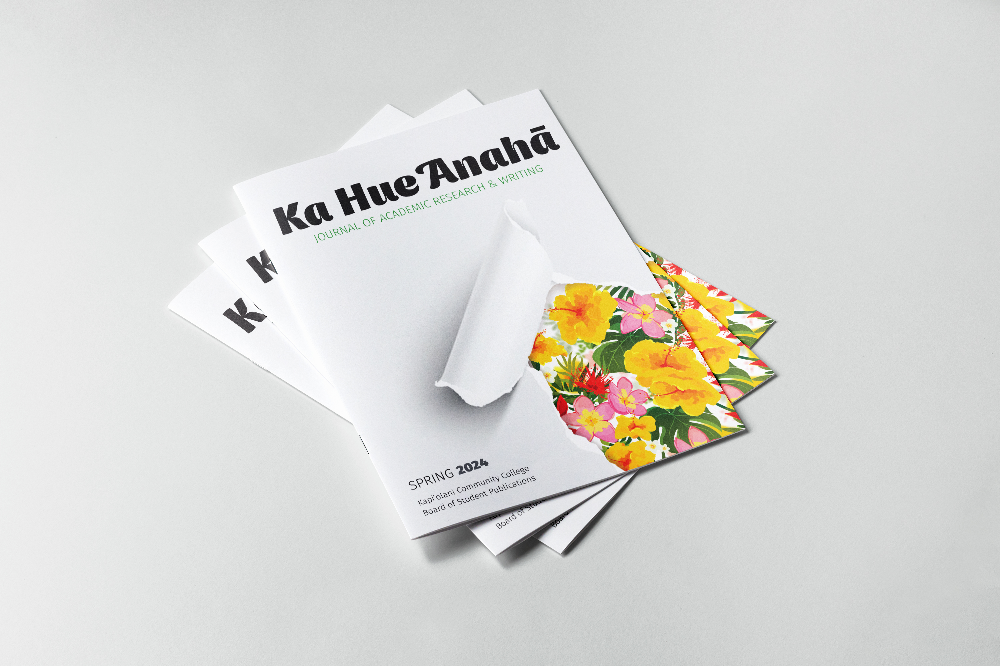

- 🖥 Photoshop
- 🖥 Indesign
- ℳ Typography

Editorial Design for Student Publications
The Challenge
The aim was to design two visually compelling covers that unify both publications while highlighting the unique identities of the creative arts and academic research, while ensuring readability and effectively utilizing typographical hierarchy and composition.
The Solution
Through the collaborative efforts of our design team, we successful conveyed the distinction between the two journal while expressing a consistent theme centered on nature's beauty, using virant floral illustrations.
Conceptualizing
During the brainstorming process, I noted different words and ideas that I connected to each journal, expanding on the ones I considered interesting. After sifting through my notes, I narrowed down a few viable concepts to explore and brought those ideas into my sketch book. There, I was able to visualize and adjust these concepts before sharing them with my team. I was tasked with the layout design for the cover of the academic research journal, the Ka Hue Anahā. After deciding on a final concept to move forward with I was able to move into Photoshop and
Indesign, where the idea was refined through multiple versions until I settled on the final draft. As a team, we decided on a theme with bright and colorful flowers to connect the two journals. For my final design, I aimed to highlight the contrast between the perception that academic journals can be dull and the reality in which they contain important and engaging work. I chose to express this through a blank sheet of paper torn back to expose a medley of colorful natural life hidden just beneath the surface.




Credits
- Co-Designer - Amy Rhee
- Illustrator - Amanda Young